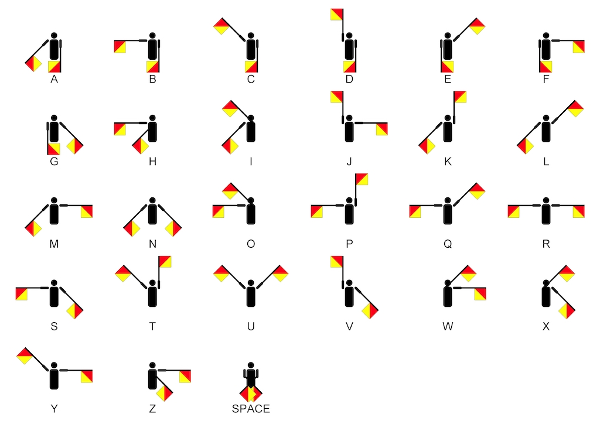

public: True class: center, middle # 同步 蒋炎岩 <jyy@nju.edu.cn> 南京大学计算机软件研究所 --- # 本讲概述 > 复习：原子操作、自旋锁、互斥锁实现互斥 > > 但仅有互斥时，实现线程行为的控制依旧很困难(或者说不太自然)，例如`join()`——你能用互斥锁实现`join()`吗？ > > * .red[同步机制]：更容易的理解并发控制 ---- * 同步：生产者-消费者问题、哲学家吃饭问题 * 条件变量 * 信号量 ---- Warning: * Lab1已经布置 * 并发.red[需要头脑清醒]，课后一定要读教材 --- class: center, middle # 同步 --- # 同步 (Synchronization) 两个或两个以上随时间变化的量在变化过程中保持一定的相对关系 * iTunes同步(手机 vs 电脑) * 变速箱同步器(合并快慢速齿轮) * 同步电机(转子与磁场速度一致) * 同步电路(由时钟驱动) * 线程同步(在某个时间点共同达到一致的状态) ---- 异步 (Asynchronous) = 不同步 * 上述很多例子都有异步版本(异步电机、异步电路、异步线程) --- # 并发程序中的同步 等待某个汇合点后各自继续行动 .float-right[<img src="../static/wiki/os/2019/img/ge.jpg" width=200px/>] * NPY：等我洗个头就出门/等我打完这局游戏就来 * 舍友：等我写完这段代码就吃饭 * 导师：等我出差回来就讨论这个课题 ---- * 两个线程各自在完成某件事(并发) * 在未来存在某个时刻，在条件满足后，两个线程在一个可预期的状态 (“同步”) --- # 同步的例子 同步：“系统中存在一个时刻，两个线程的`sync()`同时返回” * 但因为并发执行是不确定的，因此sync之后的操作可能有先后 ```c void npy_thread() { play_game(); // 不知道要玩多久 sync(); } void me_thread() { ... // 也不知道要多久 sync(); complain(); // ~!@*#!%@#% } ``` --- # 例子：实现join ```c int done; // bug void workload() { // workload asm volatile("lock addq $1, %0" : "=m"(done)); // 顺序、原子、可见 } int main() { for (int i = 0; i < nworkers; i++) create(workload); while (done != nworkers); // 等待，直到done == nworkers printf("All done\n"); } ``` --- class: center, middle # 生产者-消费者问题 --- # 生产者-消费者问题 并发控制中的最经典问题，.red[能解决90%的实际并发问题] * 生产者(线程)生产资源(一个对象)，生产时间不确定 * 消费者(线程)消费资源(取走一个对象)，消费时间也不确定 ---- 需要一个.red[并发队列]： ```c void consumer_thread() { while (1) { object_t *obj = dequeue(); // spin：队列可能没有元素 if (obj) consume(obj); } } void producer_thread() { while (1) { object_t *obj = produce(); while (enqueue(obj) != SUCC); // spin: 队列可能空间不足 } } ``` --- # 思考题：.green[如何实现并发队列？] 支持`enqueue(obj)` (返回SUCC/FAIL)、dequeue() (返回对象或NULL) 假设： * 队列的大小有限(静态数组分配) * `enqueue`在空间不足时返回FAIL * 队列操作立即返回，不会引起线程睡眠 --- # 生产者-消费者：简化 有两种线程 ```c void type1_thread() { while (1) printf("("); // enqueue } void type2_thread() { while (1) printf(")"); // dequeue } ``` 在不受并发控制的前提下，任意的括号序列都是合法的；但生产者-消费者需要满足： * 一定是某个合法括号序列的前缀 * 括号嵌套的深度不超过<math>n</math> * 例如<math>n=3</math>，`((()))(((`合法；`(((())))`不合法 --- class: center, middle # 条件变量 --- # Conditional Variables (CV) 非常直观的同步方法：一个条件变量代表“某个条件满足”，支持： * .red[**等待**]某个条件满足后发生 * 某个条件满足，.red[**唤醒一个**]正在等待的线程 * 某个条件满足，.red[**唤醒所有**]正在等待的线程 --- # CV API 对于一个conditional variable c： * .red[wait(c)] * 等待c上的事件发生 (不需要spin) * .red[signal/notify(c)] 💬 私信：走起 * 报告c上的事件发生 * 如果有线程正在等待c，则唤醒其中一个线程 * .red[broadcast/notifyAll(c)] 📣 所有人：走起 * 报告c上的事件发生 * 唤醒全部正在等待c的线程 --- # CV: 实现join ```c void worker(int id) { ... done[id] = 1; // 需要done吗？ signal(&joins); // 报告：“有人结束啦！” } int main() { for (int i = 0; i < nworkers; i++) create(worker, i); for (int i = 0; i < nworkers; i++) while (!done[i]) // tricky code wait(&joins); // 等待：有人结束 } ``` --- # CV: 实现join (cont'd) ```c void worker(int id) { ... mutex_lock(&mutex); done[id] = 1; // 可能和read并发执行 signal(&joins); mutex_unlock(&mutex); } int main() { for (int i = 0; i < nworkers; i++) create(worker, i); for (int i = 0; i < nworkers; i++) { lock(&mutex); if (!done[i]) { wait(&joins, &mutex); } unlock(&mutex); } ``` --- # CV: 实现生产者-消费者 ```c void producer_thread() { while (1) { // [ TBD ] printf("("); // push // [ TBD ] } } void consumer_thread() { while (1) { // [ TBD ] printf(")"); // pop // [ TBD ] } } ``` --- # 生产者-消费者 (cont'd) ```c void producer_thread() { while (1) { mutex_lock(&mutex); if (count == n) wait(&cond, &mutex); // 等待“有空闲” printf("("); // push count++; signal(&cond); mutex_unlock(&mutex); } } void consumer_thread() { while (1) { mutex_lock(&mutex); if (count == 0) wait(&cond, &mutex); // 等待“有数据” printf(")"); // pop count--; signal(&cond); mutex_unlock(&mutex); } } ``` --- # 凭什么算法是对的？ 感谢互斥锁提供的原子性、顺序、可见性 * 我们只需要讨论count和线程的状态 .center[<img src="/static/wiki/os/2019/img/cv-reason.png" width=450px/>] --- # 小结：条件变量实现并发控制 一个条件变量代表一个“条件” * wait()等待条件发生 * 条件发生后signal()唤醒等待的线程 * 和互斥锁联合使用 --- class: center, middle # 信号量 --- # 游泳池管理 * `in(&pool)` - 等待管理员给他一个手环；如果没有则排队等待 * `out(&pool)` - 把手环还给管理员 .center[<img src="../static/wiki/os/2019/img/swim-pool.png" width=700px/>] --- # 游泳池管理 (cont'd) 完全没有必要限制手环的数量 * 管理员可以持有任意数量的手环(游泳池容量上限) * 先进入游泳池的同学先得到 * 后进入游泳池的同学需要等待(夏天下饺子时的情况) ---- E. W. Dijkstra一定是游泳爱好者(误 --- # 游泳池管理 (cont'd) .float-right[<img src="../static/wiki/os/2019/img/doraemon.gif" width=300px/>] 游泳池可以“不存在”——线程可以任意“变出”一个手环 * 把手环看成是令牌 * 得到令牌的可以进入执行 * 可以随时创建令牌 ---- “手环” = “令牌” = “一个资源” P(&sem) - prolaag = try + decrease; wait; down; in * 等到一个手环后返回(如果此时有空闲的手环，立即返回) V(&sem) - verhoog = increase; post; up; out * 创造一个手环 --- # 信号量 .center[] --- # 信号量 (cont'd) 信号量 = 互斥锁 + 条件变量 * P/V是原子操作 * 仅有一个手环 = 互斥锁 * P = wait; V = signal * 因为计数器的存在，不会发生signal“丢失” --- # 信号量：实现join 信号量设计的重点：每一单位“.red[资源]”是什么、什么时候创造、什么时候获取 ```c void worker() { ... V(&joins); // 创建一个手环 } void main() { for (int i = 0; i < nworkers; i++) create(worker); for (int i = 0; i < nworkers; i++) // 集齐n个 P(&joins); // P()返回 -> 得到一个手环 } ``` --- # 信号量：实现生产者-消费者 ```c void producer() { P(&empty); // P()返回 -> 得到手环 mutex_lock(&mutex); printf("("); mutex_unlock(&mutex); V(&fill); } void consumer() { P(&fill); mutex_lock(&mutex); printf(")"); mutex_unlock(&mutex); V(&empty); } ``` --- class: center, middle # 哲学家吃饭问题 --- # 问题定义 每个线程`id`必须获得lhs (`id`)和rhs (`(id+1) % n`)编号的资源才能继续 * 想象成哲学家(线程)有时思考，有时吃饭 * 吃饭需要同时得到左手和右手的叉子 * 当叉子被其他人占有时，必须等待 .center[<img src="../static/wiki/os/2019/img/dining-philosophers.jpg" width=300px/>] --- # Spinning 很容易说明正确，但会忙等待 ```c void philosopher(int id) { while (1) { think(); for (int acquired = 0; !acquired; ) { spin_lock(&lock); if (empty[lhs] && empty[rhs]) { empty[lhs] = empty[rhs] = 0; acquired = 1; } spin_unlock(&lock); } eat(); emtpy[lhs] = empty[rhs] = 1; __sync_synchronize(); } } ``` --- # 一个尝试 它能正确实现叉子无冲突访问，但它正确吗？ * 你有别的办法吗？ ```c void philosopher(int id) { while (1) { think(); mutex_lock(&locks[lhs]); mutex_lock(&locks[rhs]); eat(); mutex_unlock(&locks[rhs]); mutex_unlock(&locks[lhs]); } } ``` --- # 一个General Solution 让一个人集中管理所有的叉子 ```c void philosopher(int id) { while (1) { think(); send_request(id, EAT); P(allowed[id]); // 直到manager允许我吃了才开始 eat(); send_request(id, DONE); } } void manager() { while (1) { (id, status) = receive_request(); if (status == EAT) { ... } if (status == DONE) { ... } } } ``` --- # 一个人的瓶颈 本来大家可以欢快地同时举起叉子，现在麻烦了，每次都要找那个人，他还是串行处理的…… * 一大桌人吃饭，每个人都叫服务员的感觉 ---- .red[抛开workload谈优化就是耍流氓] * eat (实际的workload)时间可能远大于请求(几个内存操作)时间 * 如果一个manager搞不定，可以分多个 <-- .blue[这几乎解决了100%的工业界问题]